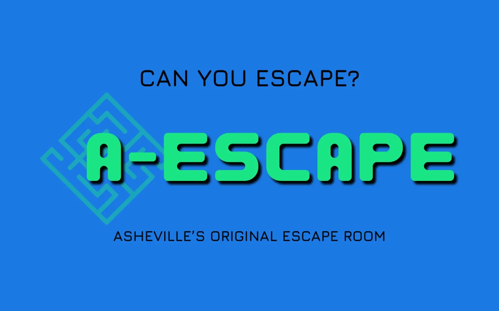
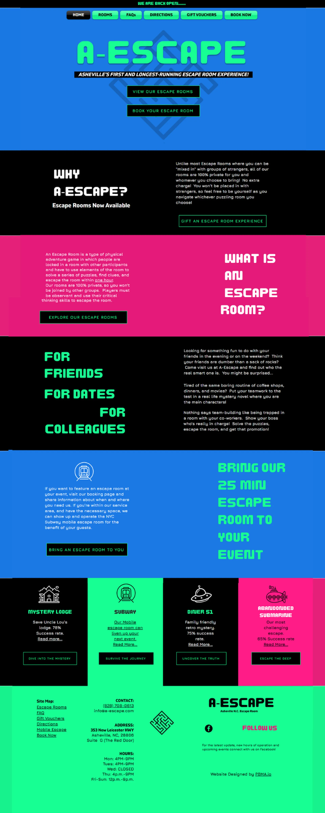
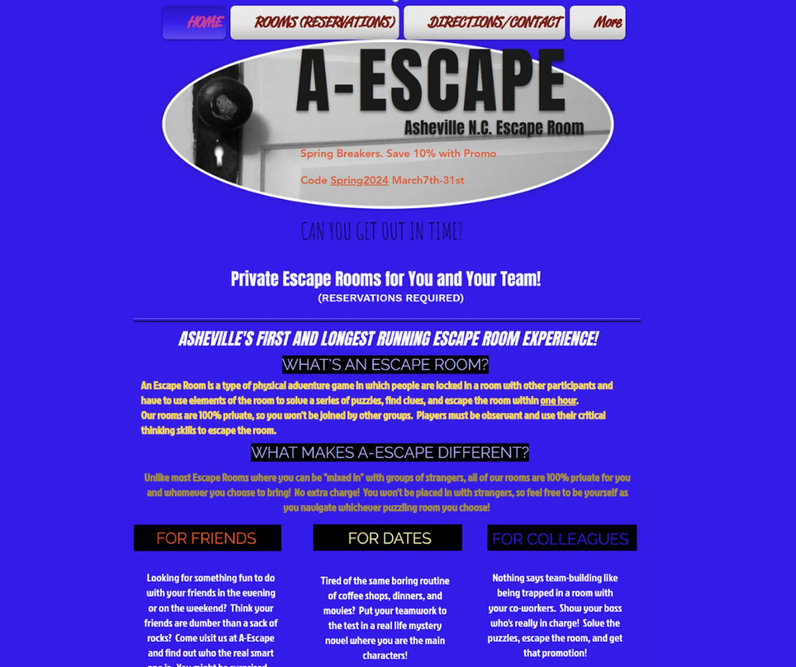
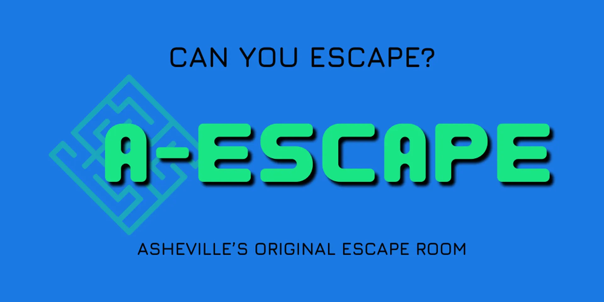
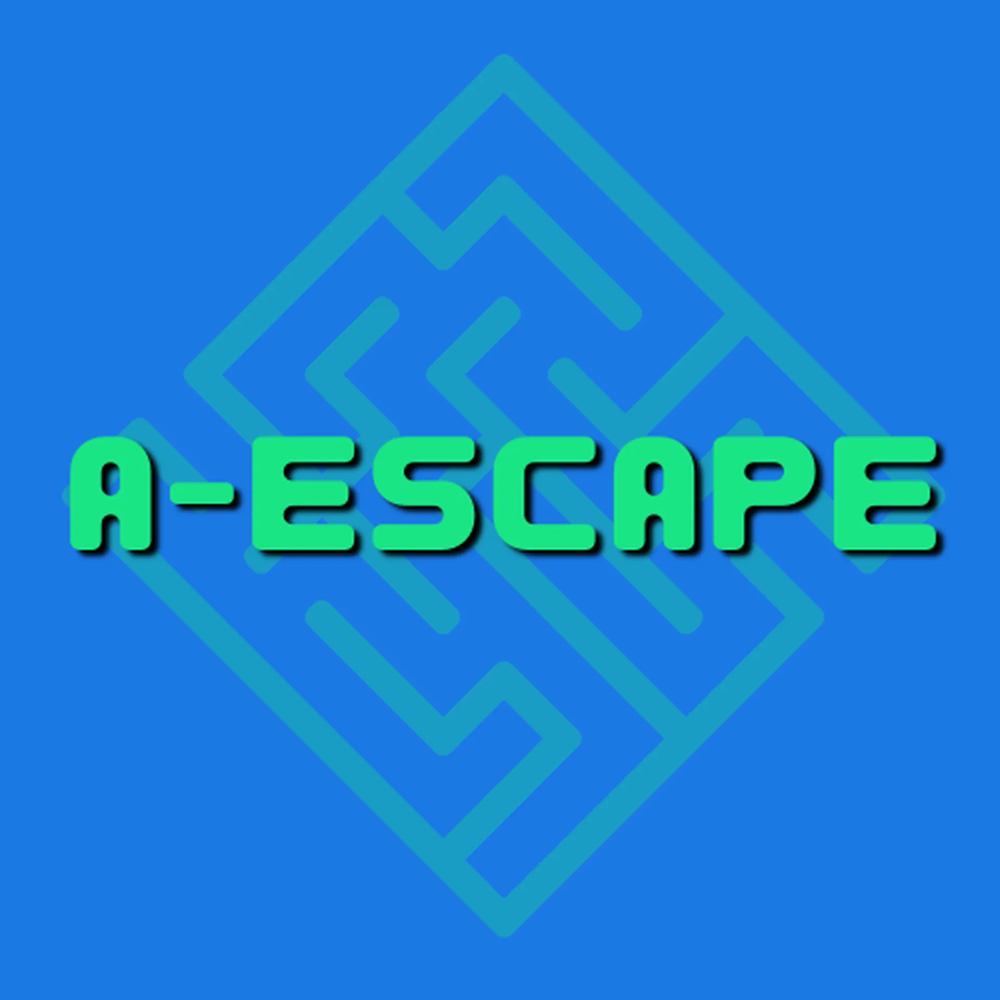

A-Escape
Retro Refined
Brand Overhaul · Website Redesign · Booking System Integration · Cold Outreach Strategy
Asheville's first escape room had a strong local reputation but lacked a cohesive, functional brand identity. I brought A-Escape into PBMA through cold outreach and led a full rebrand and website overhaul, transforming their confusing, outdated site into a clean, user-friendly experience. Working under new ownership who envisioned a retro aesthetic with modern consistency, I refined the website, reinforced their Google presence, and streamlined CRM and booking system integrations. The result was a bold, nostalgic, yet contemporary brand look that boosted bookings by 150% and brought their business firmly into focus.

Overview
A-Escape is Asheville's original escape room, recently acquired by a new out-of-state owner. I brought this project into PBMA as my first client contribution after identifying it through cold-lead research. The business had an outdated, hard-to-navigate website with major brand inconsistencies and booking system errors that were hurting customer experience and visibility.
Discovery & Strategy
The project started through a dual-pronged strategy: I identified A-Escape as a lead through local research, while PBMA's strategist developed a Loom-based site audit. After a cold outreach email and follow-up call, we connected with the new owner, Kevin, who was eager to revitalize the brand and site after inheriting it from the original founders.
Execution
I led a full rebrand and redesign of A-Escape's Wix site:
- Replaced the outdated retro aesthetic with a cohesive, stylized brand direction
- Rebuilt the site to improve readability, UX, and visual consistency
- Streamlined and corrected the Bookio booking system integration, resolving multiple 404 errors and platform compatibility issues
- Directed a photoshoot for the escape rooms and collaborated on narrative-style copy to better convey the experience
Results
- Increased bookings by 150% following the relaunch
- Improved site accessibility and user trust
- Elevated brand perception through consistent design and engaging storytelling
- Inspired additional investment from the client in print signage and promotional materials using the new branding
Key Contributions
- Cold-lead identification and acquisition
- Full visual rebrand and website build
- UX, copy, and technical booking system overhaul
- Direct, measurable business growth through design
Gallery



